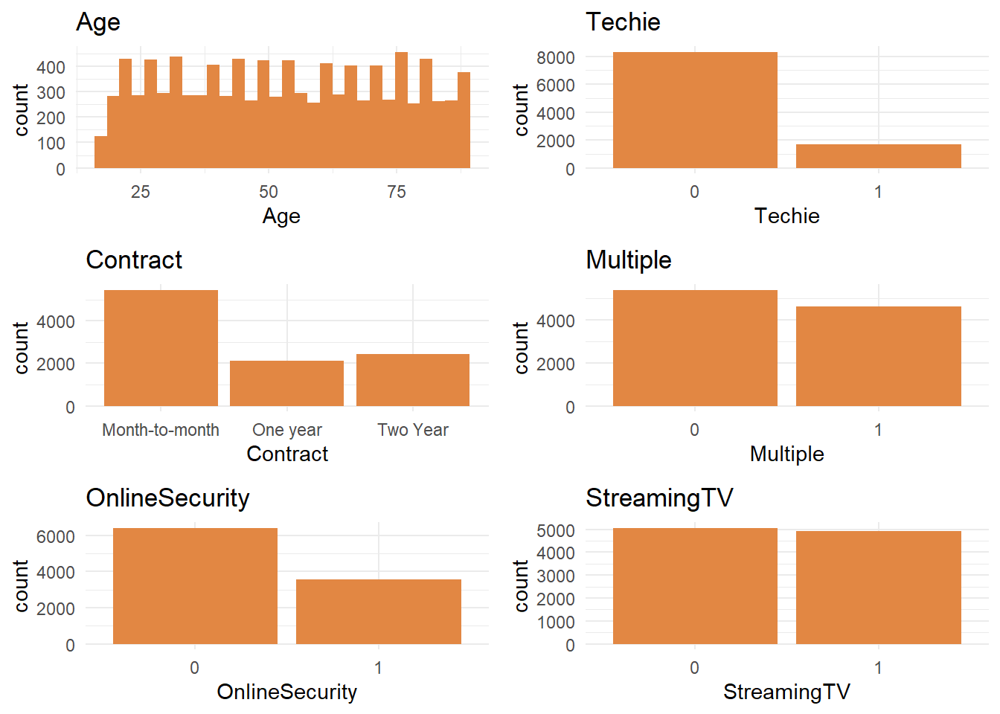
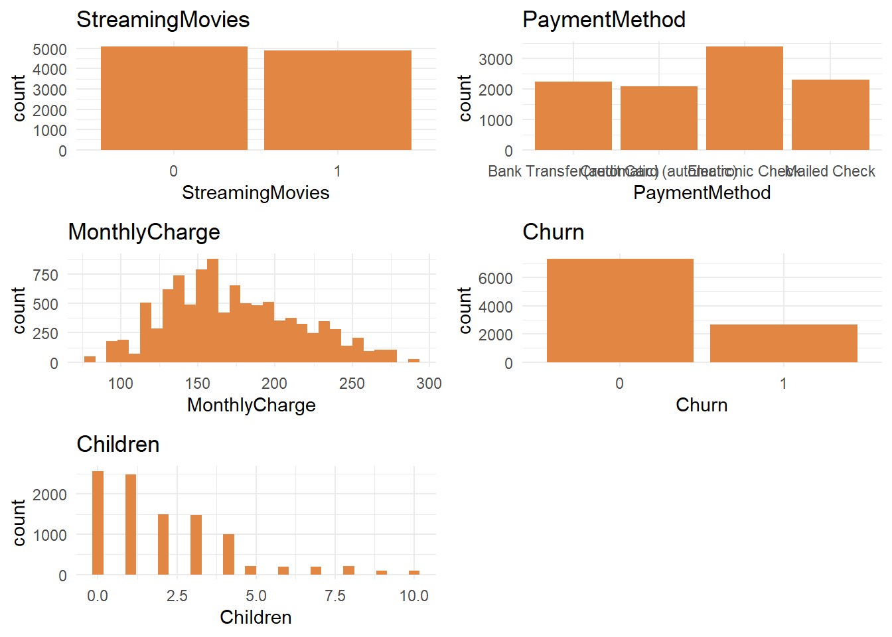
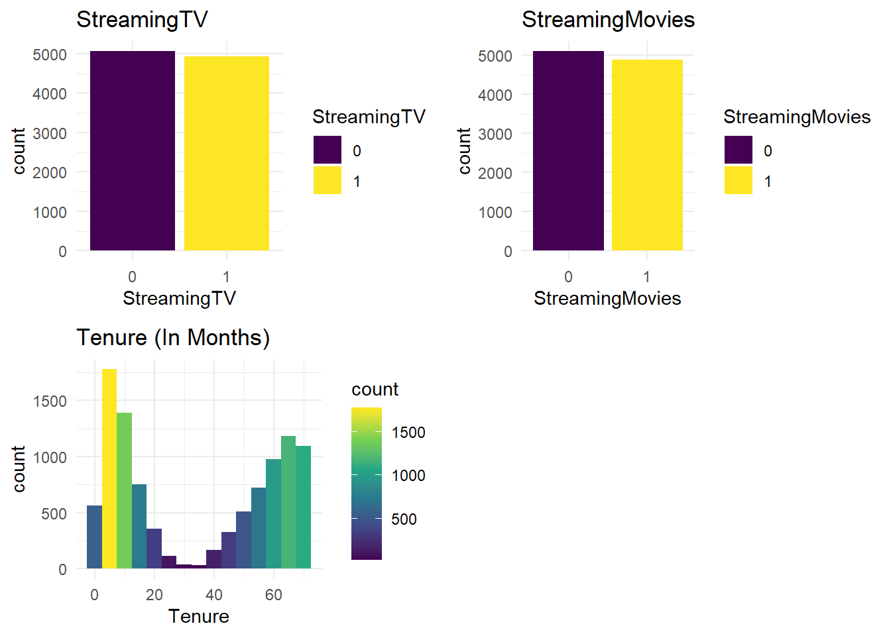
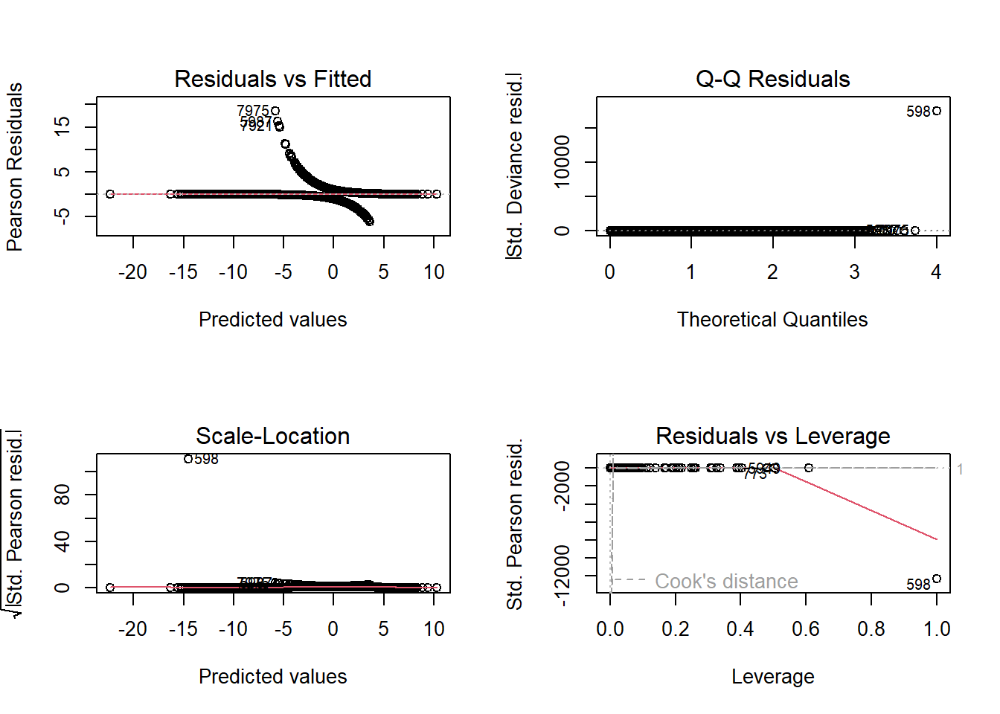
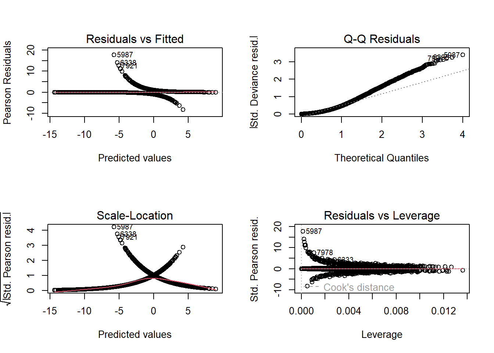

Population Area Children Age
Min. : 0 Rural :3327 Min. : 0.000 Min. :18.00
1st Qu.: 738 Suburban:3346 1st Qu.: 0.000 1st Qu.:35.00
Median : 2910 Urban :3327 Median : 1.000 Median :53.00
Mean : 9757 Mean : 2.088 Mean :53.08
3rd Qu.: 13168 3rd Qu.: 3.000 3rd Qu.:71.00
Max. :111850 Max. :10.000 Max. :89.00
Income Marital Gender Churn
Min. : 348.7 Divorced :2092 Female :5025 0:7350
1st Qu.: 19224.7 Married :1911 Male :4744 1:2650
Median : 33170.6 Never Married:1956 Nonbinary: 231
Mean : 39806.9 Separated :2014
3rd Qu.: 53246.2 Widowed :2027
Max. :258900.7
Outage_sec_perweek Email Contacts Yearly_equip_failure
Min. : 0.09975 Min. : 1.00 Min. :0.0000 Min. :0.000
1st Qu.: 8.01821 1st Qu.:10.00 1st Qu.:0.0000 1st Qu.:0.000
Median :10.01856 Median :12.00 Median :1.0000 Median :0.000
Mean :10.00185 Mean :12.02 Mean :0.9942 Mean :0.398
3rd Qu.:11.96949 3rd Qu.:14.00 3rd Qu.:2.0000 3rd Qu.:1.000
Max. :21.20723 Max. :23.00 Max. :7.0000 Max. :6.000
Techie Contract Port_modem Tablet InternetService Phone
0:8321 Month-to-month:5456 0:5166 0:7009 DSL :3463 0: 933
1:1679 One year :2102 1:4834 1:2991 Fiber Optic:4408 1:9067
Two Year :2442 None :2129
Multiple OnlineSecurity OnlineBackup DeviceProtection TechSupport StreamingTV
0:5392 0:6424 0:5494 0:5614 0:6250 0:5071
1:4608 1:3576 1:4506 1:4386 1:3750 1:4929
StreamingMovies PaperlessBilling PaymentMethod
0:5110 0:4118 Bank Transfer(automatic):2229
1:4890 1:5882 Credit Card (automatic) :2083
Electronic Check :3398
Mailed Check :2290
Tenure MonthlyCharge Bandwidth_GB_Year Timely_response
Min. : 1.000 Min. : 79.98 Min. : 155.5 1: 224
1st Qu.: 7.918 1st Qu.:139.98 1st Qu.:1236.5 2:1393
Median :35.431 Median :167.48 Median :3279.5 3:3448
Mean :34.526 Mean :172.62 Mean :3392.3 4:3358
3rd Qu.:61.480 3rd Qu.:200.73 3rd Qu.:5586.1 5:1359
Max. :71.999 Max. :290.16 Max. :7159.0 6: 199
7: 19
Timely_fixes Timely_replacements Reliability Options Respectful Courteous
1: 217 3 :3435 1: 221 1: 206 3 :3445 1: 219
2:1360 4 :3410 2:1350 2:1378 4 :3333 2:1309
3:3415 2 :1424 3:3430 3:3462 2 :1427 3:3446
4:3412 5 :1313 4:3452 4:3417 5 :1382 4:3456
5:1368 6 : 203 5:1335 5:1321 6 : 210 5:1335
6: 215 1 : 202 6: 203 6: 204 1 : 190 6: 224
7: 13 (Other): 13 7: 9 7: 12 (Other): 13 7: 11
Active_listening
3 :3461
4 :3400
2 :1378
5 :1335
1 : 206
6 : 205
(Other): 15 D208 Task 2
Part I: Research Question
A1. Which factors are most strongly associated with customer churn, and how do they influence the likelihood of churn?
A2. This analysis aims to create a multiple logistic regression model to accurately predict customer churn. Company executives can use this model’s data to accurately address customer churn.
Part II: Method Justification
B1. According to Zach Bobbitt from statology.org, there are 6 logistic regression assumptions. (Z. Bobbit 2020)
The Response variable needs to be binary. I will be using a binary factor type in this analysis.
The observations need to be independent because they do not represent the same individual. For example, time series data about the height of an individual would violate this assumption because the observations are all repeated measurements unique to an individual.
multi-colinearity needs to be minimized among variables. Multicolinearity occurs when there is a high correlation between variables. Multi-colinearity is a problem because the highly correlated variables essentially tell the same story and do not add any unique information.
Outliers have been appropriately managed.
The relationship between the explanatory variables and the logit of the response variable is linear.
Lastly, linear regression assumes that the sample size is large enough to ensure reliable and meaningful conclusions from the fitted model.
B2. I will use R within R-Studio to perform this analysis. While Python can perform this same statistical analysis, it was not explicitly designed for this purpose. R, on the other hand, was specifically designed for statistical analysis (Ihaka, n.d., p. 12). Due to this, R is the more logical choice for performing statistical tasks. Secondly, I have more experience using R than I do with Python. I’ve used R to complete previous courses, and I feel that it is more intuitive than Python.
B3. Logistic regression is the appropriate technique for this analysis because the dependent variable is binary (Yes = 1, No = 0). Additionally, the predictor variables include a mix of categorical and continuous types, making logistic regression a good choice. Lastly, logistic regression ranks customers based on their odds of churning, enabling the company to identify and address at-risk customers promptly.
Part III: Data Preparation
C1. I need to remove irrelevant columns such as customer_id, CaseOrder, and some other columns with irrelevant data to my question. Secondly, I have to update the data types. The categorical variables will be converted to factors, and the remaining quantitative variables will be converted to integers or numerics, depending on the values. Once I have all the data cleaned and prepared, I’ll be ready to feed it into an initial linear model.
C2. The dependent variable I’m explaining is ‘Churn.’ After removing several columns of data that had too many unique entries or contained irrelevant information, such as customer_id, lat and lng, I was left with around 70 independent variables, including the automatically generated dummy variables. The numeric and integer types all include a min, 1st Qu, Median, Mean, 3rd Qu, and Max values, whereas the factors include just the count for each level. The summary statistics below show all the variables, including the dependant variable, that I will use in my linear model. I will explain how I ended up with these variables in the next few sections.
C3. After running step-wise model selection based on the Akaike Information Criterion (AIC) and Backward elimination, I was left with far fewer variables than the initial model that included nearly 50 variables. I eliminated more using VIF(), which I will explain later. The following charts are the distributions of the variables I included in the final “reduced_model.”
Univariate plots

univariate5 <- ggplot(churn, aes(x = Phone)) +
geom_bar(aes(fill = Phone)) +
ggtitle("Phone") +
scale_fill_viridis_d()
univariate6 <- ggplot(churn, aes(x = Multiple)) +
geom_bar(aes(fill = Multiple)) +
ggtitle("Multiple") +
scale_fill_viridis_d()
univariate7 <- ggplot(churn, aes(x = OnlineBackup)) +
geom_bar(aes(fill = OnlineBackup)) +
ggtitle("OnlineBackup") +
scale_fill_viridis_d()
univariate8 <- ggplot(churn, aes(x = DeviceProtection)) +
geom_bar(aes(fill = DeviceProtection)) +
ggtitle("DeviceProtection") +
scale_fill_viridis_d()
# Arrange all plots into a grid
gridExtra::grid.arrange(
univariate5, univariate6,
univariate7, univariate8,
ncol = 2
)
univariate9 <- ggplot(churn, aes(x = StreamingTV)) +
geom_bar(aes(fill = StreamingTV)) +
ggtitle("StreamingTV") +
scale_fill_viridis_d()
univariate10 <- ggplot(churn, aes(x = StreamingMovies)) +
geom_bar(aes(fill = StreamingMovies)) +
ggtitle("StreamingMovies") +
scale_fill_viridis_d()
univariate11 <- ggplot(churn, aes(x = PaymentMethod)) +
geom_bar(aes(fill = PaymentMethod)) +
ggtitle("PaymentMethod") +
scale_fill_viridis_d()
univariate12 <- ggplot(churn, aes(x = Tenure)) +
geom_histogram(aes(fill = ..count..), binwidth = 5) +
ggtitle("Tenure (In Months)") +
scale_fill_viridis_c()
# Arrange all plots into a grid
gridExtra::grid.arrange(
univariate9, univariate10,
univariate11, univariate12,
ncol = 2
)Warning: The dot-dot notation (`..count..`) was deprecated in ggplot2 3.4.0.
ℹ Please use `after_stat(count)` instead.
Bivariate plots


C4. renamed the survey response variables to improve clarity and converted them to factors. R automatically generates dummy variables for each unique value in these factor variables. Additionally, I applied scaling to some of the larger quantitative variables using the built-in scale() function in R (R Core Team, 2019). This process, known as standardization or z-score normalization, is described in an article from GeeksforGeeks titled ’Logistic Regression and the Feature Scaling Ensemble.
tibble [10,000 × 38] (S3: tbl_df/tbl/data.frame)
$ Population : num [1:10000, 1] -0.6734 0.0478 -0.4172 0.2845 0.1105 ...
..- attr(*, "scaled:center")= num 9757
..- attr(*, "scaled:scale")= num 14433
$ Area : Factor w/ 3 levels "Rural","Suburban",..: 3 3 3 2 2 3 2 2 2 1 ...
$ Children : int [1:10000] 0 1 4 1 0 3 0 2 2 1 ...
$ Age : int [1:10000] 68 27 50 48 83 83 79 30 49 86 ...
$ Income : num [1:10000, 1] -0.39876 -0.64192 -1.07083 -0.74049 0.00948 ...
..- attr(*, "scaled:center")= num 39807
..- attr(*, "scaled:scale")= num 28200
$ Marital : Factor w/ 5 levels "Divorced","Married",..: 5 2 5 2 4 3 5 2 4 2 ...
$ Gender : Factor w/ 3 levels "Female","Male",..: 2 1 1 2 2 1 2 1 3 1 ...
$ Churn : Factor w/ 2 levels "0","1": 1 2 1 1 2 1 2 2 1 1 ...
$ Outage_sec_perweek : num [1:10000, 1] -0.68 0.57 0.252 1.65 -0.623 ...
..- attr(*, "scaled:center")= num 10
..- attr(*, "scaled:scale")= num 2.98
$ Email : int [1:10000] 10 12 9 15 16 15 10 16 20 18 ...
$ Contacts : int [1:10000] 0 0 0 2 2 3 0 0 2 1 ...
$ Yearly_equip_failure: int [1:10000] 1 1 1 0 1 1 1 0 3 0 ...
$ Techie : Factor w/ 2 levels "0","1": 1 2 2 2 1 1 2 2 1 1 ...
$ Contract : Factor w/ 3 levels "Month-to-month",..: 2 1 3 3 1 2 1 1 1 3 ...
$ Port_modem : Factor w/ 2 levels "0","1": 2 1 2 1 2 2 1 1 2 2 ...
$ Tablet : Factor w/ 2 levels "0","1": 2 2 1 1 1 1 1 1 1 1 ...
$ InternetService : Factor w/ 3 levels "DSL","Fiber Optic",..: 2 2 1 1 2 3 1 1 1 2 ...
$ Phone : Factor w/ 2 levels "0","1": 2 2 2 2 1 2 2 1 2 2 ...
$ Multiple : Factor w/ 2 levels "0","1": 1 2 2 1 1 2 1 1 1 1 ...
$ OnlineSecurity : Factor w/ 2 levels "0","1": 2 2 1 2 1 2 1 1 2 2 ...
$ OnlineBackup : Factor w/ 2 levels "0","1": 2 1 1 1 1 2 1 2 2 1 ...
$ DeviceProtection : Factor w/ 2 levels "0","1": 1 1 1 1 1 2 1 1 1 2 ...
$ TechSupport : Factor w/ 2 levels "0","1": 1 1 1 1 2 1 2 1 1 1 ...
$ StreamingTV : Factor w/ 2 levels "0","1": 1 2 1 2 2 1 2 1 1 1 ...
$ StreamingMovies : Factor w/ 2 levels "0","1": 2 2 2 1 1 2 2 1 1 2 ...
$ PaperlessBilling : Factor w/ 2 levels "0","1": 2 2 2 2 1 1 1 2 2 2 ...
$ PaymentMethod : Factor w/ 4 levels "Bank Transfer(automatic)",..: 2 1 2 4 4 3 3 4 1 4 ...
$ Tenure : num [1:10000, 1] -1.049 -1.262 -0.71 -0.659 -1.242 ...
..- attr(*, "scaled:center")= num 34.5
..- attr(*, "scaled:scale")= num 26.4
$ MonthlyCharge : num [1:10000, 1] -0.00394 1.63024 -0.29521 -1.22646 -0.52806 ...
..- attr(*, "scaled:center")= num 173
..- attr(*, "scaled:scale")= num 42.9
$ Bandwidth_GB_Year : num [1:10000, 1] -1.138 -1.186 -0.612 -0.562 -1.428 ...
..- attr(*, "scaled:center")= num 3392
..- attr(*, "scaled:scale")= num 2185
$ Timely_response : Factor w/ 7 levels "1","2","3","4",..: 5 3 4 4 4 3 6 2 5 2 ...
$ Timely_fixes : Factor w/ 7 levels "1","2","3","4",..: 5 4 4 4 4 3 5 2 4 2 ...
$ Timely_replacements : Factor w/ 8 levels "1","2","3","4",..: 5 3 2 4 4 3 6 2 4 2 ...
$ Reliability : Factor w/ 7 levels "1","2","3","4",..: 3 3 4 2 3 2 4 5 3 2 ...
$ Options : Factor w/ 7 levels "1","2","3","4",..: 4 4 4 5 4 4 1 2 4 5 ...
$ Respectful : Factor w/ 8 levels "1","2","3","4",..: 4 3 3 4 4 3 5 3 3 2 ...
$ Courteous : Factor w/ 7 levels "1","2","3","4",..: 3 4 3 3 4 3 5 4 4 3 ...
$ Active_listening : Factor w/ 8 levels "1","2","3","4",..: 4 4 3 3 5 3 5 5 4 3 ...C5. The prepared data set will be included in my submission files.
Part IV: Model Comparison and Analysis
D1. To set up my initial model i first started by separating in the data in to training and test sets with a 80/20 split. The initial model will attempt to explain Churn by all the remaining variables in the data set that were not removed in the data cleaning step.
I begin by creating a logistic regression model using glm() because I need to use the statistical family “binomial’ for logistic regression. I based the model on the training set of data, churn_train.
initial_model <- glm(Churn ~. , data = churn_train, family = 'binomial')
summary(initial_model)
Call:
glm(formula = Churn ~ ., family = "binomial", data = churn_train)
Coefficients:
Estimate Std. Error z value Pr(>|z|)
(Intercept) -2.183497 1.616793 -1.351 0.176852
Population 0.004859 0.045224 0.107 0.914436
AreaSuburban -0.044614 0.108589 -0.411 0.681180
AreaUrban 0.048228 0.107353 0.449 0.653253
Children 0.066099 0.156399 0.423 0.672563
Age -0.007418 0.016729 -0.443 0.657468
Income 0.007546 0.043294 0.174 0.861637
MaritalMarried 0.285143 0.139360 2.046 0.040747 *
MaritalNever Married 0.041739 0.138242 0.302 0.762705
MaritalSeparated 0.235091 0.136990 1.716 0.086140 .
MaritalWidowed 0.257710 0.137371 1.876 0.060653 .
GenderMale 0.449330 0.327031 1.374 0.169451
GenderNonbinary -0.192983 0.319679 -0.604 0.546060
Outage_sec_perweek -0.044682 0.044029 -1.015 0.310187
Email -0.007514 0.014529 -0.517 0.605060
Contacts 0.055588 0.044615 1.246 0.212784
Yearly_equip_failure -0.019707 0.068706 -0.287 0.774245
Techie1 1.079215 0.116909 9.231 < 2e-16 ***
ContractOne year -3.501160 0.146962 -23.824 < 2e-16 ***
ContractTwo Year -3.575674 0.145252 -24.617 < 2e-16 ***
Port_modem1 0.105360 0.087936 1.198 0.230864
Tablet1 -0.026740 0.096277 -0.278 0.781216
InternetServiceFiber Optic -3.155596 2.390831 -1.320 0.186877
InternetServiceNone -1.869907 1.905271 -0.981 0.326376
Phone1 -0.245461 0.148098 -1.657 0.097435 .
Multiple1 0.346369 0.230624 1.502 0.133129
OnlineSecurity1 -0.087968 0.355207 -0.248 0.804404
OnlineBackup1 -0.032863 0.206651 -0.159 0.873648
DeviceProtection1 -0.000561 0.265977 -0.002 0.998317
TechSupport1 -0.209434 0.197824 -1.059 0.289743
StreamingTV1 1.470611 0.579297 2.539 0.011129 *
StreamingMovies1 1.556146 0.415179 3.748 0.000178 ***
PaperlessBilling1 0.143362 0.089006 1.611 0.107245
PaymentMethodCredit Card (automatic) 0.148570 0.132087 1.125 0.260675
PaymentMethodElectronic Check 0.591955 0.120186 4.925 8.42e-07 ***
PaymentMethodMailed Check 0.117905 0.131624 0.896 0.370373
Tenure 1.258128 10.939179 0.115 0.908436
MonthlyCharge 1.988126 0.679274 2.927 0.003424 **
Bandwidth_GB_Year -4.407857 11.034127 -0.399 0.689543
Timely_response2 0.105617 0.341765 0.309 0.757296
Timely_response3 -0.075658 0.342895 -0.221 0.825370
Timely_response4 -0.107618 0.355823 -0.302 0.762311
Timely_response5 -0.130430 0.379524 -0.344 0.731096
Timely_response6 0.030604 0.486771 0.063 0.949869
Timely_response7 1.409240 1.347659 1.046 0.295702
Timely_fixes2 0.215362 0.368416 0.585 0.558843
Timely_fixes3 0.121886 0.368976 0.330 0.741147
Timely_fixes4 0.185548 0.377571 0.491 0.623126
Timely_fixes5 0.021660 0.398114 0.054 0.956611
Timely_fixes6 0.205284 0.500692 0.410 0.681806
Timely_fixes7 -0.665699 7.368606 -0.090 0.928015
Timely_replacements2 -0.326865 0.341873 -0.956 0.339021
Timely_replacements3 -0.236863 0.337151 -0.703 0.482339
Timely_replacements4 -0.309366 0.342728 -0.903 0.366706
Timely_replacements5 -0.199652 0.362375 -0.551 0.581665
Timely_replacements6 0.230058 0.483536 0.476 0.634229
Timely_replacements7 -1.537415 1.295348 -1.187 0.235277
Timely_replacements8 -15.409312 882.774206 -0.017 0.986073
Reliability2 0.169587 0.304069 0.558 0.577032
Reliability3 -0.163430 0.293398 -0.557 0.577510
Reliability4 -0.053462 0.296920 -0.180 0.857110
Reliability5 -0.009182 0.315033 -0.029 0.976749
Reliability6 0.144490 0.428959 0.337 0.736239
Reliability7 -13.795167 302.766485 -0.046 0.963658
Options2 -0.031497 0.351700 -0.090 0.928640
Options3 -0.167815 0.344568 -0.487 0.626236
Options4 -0.060103 0.349367 -0.172 0.863411
Options5 0.032037 0.368124 0.087 0.930649
Options6 -0.043487 0.456973 -0.095 0.924184
Options7 -2.083100 1.313437 -1.586 0.112741
Respectful2 0.461390 0.368478 1.252 0.210514
Respectful3 0.466251 0.362045 1.288 0.197807
Respectful4 0.560269 0.368487 1.520 0.128396
Respectful5 0.448965 0.385935 1.163 0.244701
Respectful6 0.275895 0.468040 0.589 0.555546
Respectful7 0.601494 4.380605 0.137 0.890787
Respectful8 -14.547750 882.743578 -0.016 0.986851
Courteous2 0.244603 0.320381 0.763 0.445181
Courteous3 0.360973 0.307834 1.173 0.240947
Courteous4 0.222263 0.312440 0.711 0.476849
Courteous5 0.411782 0.333090 1.236 0.216366
Courteous6 0.416573 0.438668 0.950 0.342299
Courteous7 -0.738353 2.013415 -0.367 0.713830
Active_listening2 -0.093494 0.306772 -0.305 0.760544
Active_listening3 -0.018280 0.292516 -0.062 0.950170
Active_listening4 -0.131636 0.295197 -0.446 0.655651
Active_listening5 0.006247 0.312198 0.020 0.984035
Active_listening6 0.039801 0.420112 0.095 0.924522
Active_listening7 -0.511992 1.044859 -0.490 0.624126
Active_listening8 -14.014593 882.743676 -0.016 0.987333
---
Signif. codes: 0 '***' 0.001 '**' 0.01 '*' 0.05 '.' 0.1 ' ' 1
(Dispersion parameter for binomial family taken to be 1)
Null deviance: 9251.6 on 7999 degrees of freedom
Residual deviance: 3419.4 on 7910 degrees of freedom
AIC: 3599.4
Number of Fisher Scoring iterations: 13The summary of the initial model shows that there are several variables whose coefficients do not add any statistically significant information to the model. I’ll address these in the next step.
The null deviance is 9251.6 on 7999 degrees of freedom, meaning that my response variable, Churn, shows a lot of variability without predictors and could be explained by adding predictor variables. The residual deviance of 3419.4 on 7910 degrees of freedom indicates that the predictor variables do indeed provide an effective explanation of the variability in Churn.
The AIC for this model is 3599.4. I will reference this number again when comparing the reduced model.

D2. I’ve chosen to use backward stepwise selection (Larose & Larose, 2019), because I have a large amount of variables and backward elimination will remove each insignificant variable until only those values that have a meaningful contribution will remain.
D3. After backward elimination I was left with the following model.
Call:
glm(formula = Churn ~ Children + Age + Techie + Contract + InternetService +
Phone + Multiple + OnlineSecurity + OnlineBackup + DeviceProtection +
StreamingTV + StreamingMovies + PaperlessBilling + PaymentMethod +
Tenure + MonthlyCharge + Bandwidth_GB_Year, family = "binomial",
data = churn_train)
Coefficients:
Estimate Std. Error z value Pr(>|z|)
(Intercept) -3.273097 0.492371 -6.648 2.98e-11 ***
Children -0.146373 0.042548 -3.440 0.000581 ***
Age 0.015510 0.004485 3.458 0.000543 ***
Techie1 1.099979 0.115276 9.542 < 2e-16 ***
ContractOne year -3.445299 0.144164 -23.898 < 2e-16 ***
ContractTwo Year -3.507074 0.141909 -24.714 < 2e-16 ***
InternetServiceFiber Optic 0.095929 0.562920 0.170 0.864686
InternetServiceNone 0.761809 0.489279 1.557 0.119470
Phone1 -0.243791 0.145357 -1.677 0.093506 .
Multiple1 0.463706 0.161808 2.866 0.004160 **
OnlineSecurity1 -0.564547 0.125614 -4.494 6.98e-06 ***
OnlineBackup1 -0.249549 0.139805 -1.785 0.074265 .
DeviceProtection1 -0.337493 0.124476 -2.711 0.006702 **
StreamingTV1 0.710337 0.267354 2.657 0.007886 **
StreamingMovies1 1.097328 0.272227 4.031 5.56e-05 ***
PaperlessBilling1 0.149497 0.087666 1.705 0.088140 .
PaymentMethodCredit Card (automatic) 0.147691 0.130322 1.133 0.257100
PaymentMethodElectronic Check 0.564349 0.118028 4.781 1.74e-06 ***
PaymentMethodMailed Check 0.102746 0.129278 0.795 0.426747
Tenure -13.555580 2.641246 -5.132 2.86e-07 ***
MonthlyCharge 1.130236 0.210212 5.377 7.59e-08 ***
Bandwidth_GB_Year 10.583277 2.653505 3.988 6.65e-05 ***
---
Signif. codes: 0 '***' 0.001 '**' 0.01 '*' 0.05 '.' 0.1 ' ' 1
(Dispersion parameter for binomial family taken to be 1)
Null deviance: 9251.6 on 7999 degrees of freedom
Residual deviance: 3473.4 on 7978 degrees of freedom
AIC: 3517.4
Number of Fisher Scoring iterations: 7I checked for multicoliniarity using vif() by checking for values above 5. This model returned a few that were exceptionally high. Bandwidth_GB_Year was the highest with a vif value of 2656.593644. I manually removed this variable from the model and checked vif again to find that the other variables were less than 5 aside from MonthlyCharge whose value was 16.889045. Once these two variables were removed from the model all the vif values were under 5.
GVIF Df GVIF^(1/(2*Df))
Children 4.408718 1 2.099695
Age 4.524717 1 2.127138
Techie 1.073101 1 1.035906
Contract 1.671715 2 1.137079
InternetService 80.958271 2 2.999614
Phone 1.009656 1 1.004816
Multiple 3.534505 1 1.880028
OnlineSecurity 1.966776 1 1.402418
OnlineBackup 2.627063 1 1.620822
DeviceProtection 2.074451 1 1.440295
StreamingTV 9.483245 1 3.079488
StreamingMovies 9.806014 1 3.131456
PaperlessBilling 1.007578 1 1.003782
PaymentMethod 1.035359 3 1.005808
Tenure 2289.554799 1 47.849293
MonthlyCharge 22.288658 1 4.721087
Bandwidth_GB_Year 2656.593644 1 51.542154
Call:
glm(formula = Churn ~ Children + Age + Techie + Contract + InternetService +
Phone + Multiple + OnlineSecurity + OnlineBackup + DeviceProtection +
StreamingTV + StreamingMovies + PaperlessBilling + PaymentMethod +
Tenure, family = "binomial", data = churn_train)
Coefficients:
Estimate Std. Error z value Pr(>|z|)
(Intercept) -5.262e+00 2.649e-01 -19.862 < 2e-16 ***
Children 5.434e-03 2.009e-02 0.270 0.7868
Age -4.828e-05 2.095e-03 -0.023 0.9816
Techie1 1.092e+00 1.142e-01 9.562 < 2e-16 ***
ContractOne year -3.338e+00 1.386e-01 -24.088 < 2e-16 ***
ContractTwo Year -3.383e+00 1.356e-01 -24.941 < 2e-16 ***
InternetServiceFiber Optic -1.393e+00 1.014e-01 -13.739 < 2e-16 ***
InternetServiceNone -1.571e+00 1.239e-01 -12.681 < 2e-16 ***
Phone1 -2.839e-01 1.436e-01 -1.977 0.0481 *
Multiple1 1.645e+00 9.266e-02 17.752 < 2e-16 ***
OnlineSecurity1 -1.180e-01 8.896e-02 -1.326 0.1848
OnlineBackup1 7.720e-01 8.735e-02 8.839 < 2e-16 ***
DeviceProtection1 3.880e-01 8.617e-02 4.503 6.69e-06 ***
StreamingTV1 2.951e+00 1.083e-01 27.244 < 2e-16 ***
StreamingMovies1 3.487e+00 1.151e-01 30.291 < 2e-16 ***
PaperlessBilling1 1.409e-01 8.675e-02 1.624 0.1044
PaymentMethodCredit Card (automatic) 1.278e-01 1.293e-01 0.989 0.3228
PaymentMethodElectronic Check 5.390e-01 1.169e-01 4.612 3.98e-06 ***
PaymentMethodMailed Check 7.236e-02 1.284e-01 0.563 0.5731
Tenure -2.890e+00 8.043e-02 -35.931 < 2e-16 ***
---
Signif. codes: 0 '***' 0.001 '**' 0.01 '*' 0.05 '.' 0.1 ' ' 1
(Dispersion parameter for binomial family taken to be 1)
Null deviance: 9251.6 on 7999 degrees of freedom
Residual deviance: 3562.2 on 7980 degrees of freedom
AIC: 3602.2
Number of Fisher Scoring iterations: 7Lastly I needed to remove the variables from the model that were not adding any value. Children, Age, PaperlessBilling1, and OnlineSecurity1 all have coefficients that were not statistically significant. The following is the reduced model.
Call:
glm(formula = Churn ~ Techie + Contract + InternetService + Phone +
Multiple + OnlineBackup + DeviceProtection + StreamingTV +
StreamingMovies + PaymentMethod + Tenure, family = "binomial",
data = churn_train)
Coefficients:
Estimate Std. Error z value Pr(>|z|)
(Intercept) -5.20830 0.23006 -22.638 < 2e-16 ***
Techie1 1.09654 0.11402 9.617 < 2e-16 ***
ContractOne year -3.33261 0.13829 -24.098 < 2e-16 ***
ContractTwo Year -3.37854 0.13512 -25.005 < 2e-16 ***
InternetServiceFiber Optic -1.38596 0.10117 -13.700 < 2e-16 ***
InternetServiceNone -1.56353 0.12371 -12.639 < 2e-16 ***
Phone1 -0.28445 0.14362 -1.981 0.0476 *
Multiple1 1.64377 0.09254 17.763 < 2e-16 ***
OnlineBackup1 0.77150 0.08729 8.839 < 2e-16 ***
DeviceProtection1 0.39277 0.08605 4.564 5.01e-06 ***
StreamingTV1 2.94220 0.10800 27.243 < 2e-16 ***
StreamingMovies1 3.48437 0.11498 30.305 < 2e-16 ***
PaymentMethodCredit Card (automatic) 0.12543 0.12913 0.971 0.3314
PaymentMethodElectronic Check 0.53286 0.11667 4.567 4.94e-06 ***
PaymentMethodMailed Check 0.06427 0.12833 0.501 0.6165
Tenure -2.88770 0.08032 -35.953 < 2e-16 ***
---
Signif. codes: 0 '***' 0.001 '**' 0.01 '*' 0.05 '.' 0.1 ' ' 1
(Dispersion parameter for binomial family taken to be 1)
Null deviance: 9251.6 on 7999 degrees of freedom
Residual deviance: 3566.6 on 7984 degrees of freedom
AIC: 3598.6
Number of Fisher Scoring iterations: 7
The coefficients in the reduced model include variables whose coefficient is statistically significant at the 0.001 level. Phone1 was kept because it showed a very minor significance, 0.1, but because of the vast number of variables that had no significance I decided to keep Phone1. PaymentMethodCredit Card (automatic) and PaymentMethodMaild Check were also kept in the model despite having an insignificant coefficient value. These dummy variables were retained because PaymentMethod is the variable and these 2 mentioned above are 2 of the levels. Because PaymentMethodMailed Check has a high significance at 0.001 I have decided to keep the variable PaymentMethod in the model.
E1. The AIC was used as one of the model evaluation metrics. The AIC for the initial model was 3599.4, while the AIC for the reduced model was 3598.6. The reduced model, having a lower AIC value, suggests that the model fits the data well while using far fewer predictors.
Another metric used is a chi square test on the initial model and the reduced model. The chi square test will determine if the reduced model (simpler model) fits the data significantly worse than the initial model (complex model).
Analysis of Deviance Table
Model 1: Churn ~ Population + Area + Children + Age + Income + Marital +
Gender + Outage_sec_perweek + Email + Contacts + Yearly_equip_failure +
Techie + Contract + Port_modem + Tablet + InternetService +
Phone + Multiple + OnlineSecurity + OnlineBackup + DeviceProtection +
TechSupport + StreamingTV + StreamingMovies + PaperlessBilling +
PaymentMethod + Tenure + MonthlyCharge + Bandwidth_GB_Year +
Timely_response + Timely_fixes + Timely_replacements + Reliability +
Options + Respectful + Courteous + Active_listening
Model 2: Churn ~ Techie + Contract + InternetService + Phone + Multiple +
OnlineBackup + DeviceProtection + StreamingTV + StreamingMovies +
PaymentMethod + Tenure
Resid. Df Resid. Dev Df Deviance Pr(>Chi)
1 7910 3419.4
2 7984 3566.6 -74 -147.17 9.088e-07 ***
---
Signif. codes: 0 '***' 0.001 '**' 0.01 '*' 0.05 '.' 0.1 ' ' 1The Chi-square test indicates that the reduced model has more residual degrees of freedom because it includes fewer predictors. However, the reduced model has a higher residual deviance, meaning it fits the data worse than the initial model. This is expected since eliminating predictors generally reduces the model’s ability to explain the variance in the data. The difference in deviance between the models is -147.17, which confirms that the reduced model explains less variance than the initial model. Again, this is anticipated because fewer predictors are included.
The p-value for the Chi-square test is 9.088e-07, which is far smaller than the significance threshold of 0.05. This indicates that the difference in deviance between the two models is statistically significant, meaning the initial model fits the data significantly better than the reduced model.
However, the AIC for the reduced model is slightly smaller than that of the initial model, suggesting that the reduced model achieves a similar predictive power. In the next section, I will provide a detailed analysis of the reduced model’s accuracy, but for now, it is worth noting that the reduced model predicts churn correctly 90.375% of the time.
To summarize the comparison, while the initial model fits the data better, it is also far more complex. The reduced model, on the other hand, achieves similar predictive power (>90% accuracy) with fewer predictors, demonstrating one of the benefits of simpler models: reduced data collection costs.
E2.
I used the predict() function to predict the probabilities of churn in both the training set and the test set. If the probability is above 0.5, the ifelse() function assigns a ‘1’, indicating that the predicted value is ‘Churned,’ and a ‘0’ for ‘Not Churned.’
I’ve included the confusion matrix for both the test set and the training set below. This confusion matrix evaluates the model’s predictions for churn and consists of true negatives, false negatives, false positives, and true positives. By adding up the accurate predictions (true negatives and true positives) and dividing by the total observations in the data set, I calculate the accuracy rate. Similarly, the misclassification rate is calculated as 1− 'Accuracy rate'.
For the training set (churn_train), the model accurately predicted churn 7,103 times out of a total of 8,000 observations, resulting in an accuracy rate of 90.375%. 1−0.90375=0.0965 Thus, the misclassification error, or the rate at which the model is incorrect, is 9.65%.
For the training set (churn_test), the model accurately predicted churn 1765 times out of a total of 2,000 observations, resulting in an accuracy rate of 90.25%. 1−0.9025=0.0975 therefore, the misclassification error for the test set is 9.65%.
Actual
Predicted 0 1
0 5528 418
1 352 1702 Actual
Predicted 0 1
0 1389 114
1 81 416E3. The full error-free code will be included in my submission files. It will be titled CodeV1T2.R.
Part V: Data Summary and Implications
F1.
Call:
glm(formula = Churn ~ Techie + Contract + InternetService + Phone +
Multiple + OnlineBackup + DeviceProtection + StreamingTV +
StreamingMovies + PaymentMethod + Tenure, family = "binomial",
data = churn_train)
Coefficients:
Estimate Std. Error z value Pr(>|z|)
(Intercept) -5.20830 0.23006 -22.638 < 2e-16 ***
Techie1 1.09654 0.11402 9.617 < 2e-16 ***
ContractOne year -3.33261 0.13829 -24.098 < 2e-16 ***
ContractTwo Year -3.37854 0.13512 -25.005 < 2e-16 ***
InternetServiceFiber Optic -1.38596 0.10117 -13.700 < 2e-16 ***
InternetServiceNone -1.56353 0.12371 -12.639 < 2e-16 ***
Phone1 -0.28445 0.14362 -1.981 0.0476 *
Multiple1 1.64377 0.09254 17.763 < 2e-16 ***
OnlineBackup1 0.77150 0.08729 8.839 < 2e-16 ***
DeviceProtection1 0.39277 0.08605 4.564 5.01e-06 ***
StreamingTV1 2.94220 0.10800 27.243 < 2e-16 ***
StreamingMovies1 3.48437 0.11498 30.305 < 2e-16 ***
PaymentMethodCredit Card (automatic) 0.12543 0.12913 0.971 0.3314
PaymentMethodElectronic Check 0.53286 0.11667 4.567 4.94e-06 ***
PaymentMethodMailed Check 0.06427 0.12833 0.501 0.6165
Tenure -2.88770 0.08032 -35.953 < 2e-16 ***
---
Signif. codes: 0 '***' 0.001 '**' 0.01 '*' 0.05 '.' 0.1 ' ' 1
(Dispersion parameter for binomial family taken to be 1)
Null deviance: 9251.6 on 7999 degrees of freedom
Residual deviance: 3566.6 on 7984 degrees of freedom
AIC: 3598.6
Number of Fisher Scoring iterations: 7Several variables show a strong and significant association with churn. The variable with the most notable positive association is StreamingMovies1 having an coefficient of 3.48437, which means that, holding all other variables constant, subscribing to StreamingMovies (increasing the predictor variable by 1) increases the log-odds of churn by 3.48437.
To convert the log odds into odds I will get the exponentiated coefficients from the reduced model. (RStudio, n.d.)
(Intercept) Techie1
0.005470978 2.993794507
ContractOne year ContractTwo Year
0.035699943 0.034097069
InternetServiceFiber Optic InternetServiceNone
0.250084106 0.209394880
Phone1 Multiple1
0.752430194 5.174646492
OnlineBackup1 DeviceProtection1
2.163017155 1.481081693
StreamingTV1 StreamingMovies1
18.957494650 32.601923128
PaymentMethodCredit Card (automatic) PaymentMethodElectronic Check
1.133636347 1.703802472
PaymentMethodMailed Check Tenure
1.066378884 0.055704203 The odds of churn are 32.60 times higher for customers with StreamingMovies services. similarly, StreamingTV1 and Multiple1 have 18.96 and 5.17 respectively, times higher odds of churning. Likewise, when a customer is a Techie (Techie1), the odds of churn are 2.993794507 times higher than non-techie customers.
This model contains almost exclusively, variables whose statistical significance is 0.001. one variable has a 0.1 significance and two other dummy variables are not statistically significant but could not be removed because they are just part of a variable that does include a very statistically significant coefficient.
This reduced model successfully predicts customer churn at a rate over 90%. Statistically, variables such as Techie, Contract, InternetService, Multiple, StreamingTV, StreamingMovies, and Tenure are highly significant, with p-values below 0.05. For instance, customers with StreamingMovies1 or StreamingTV1 are significantly more likely to churn, while longer contracts decreases the likelihood of churn. The model successfully reduces the number of variables making the model simpler and does not sacrafice fit or performance. Practically, these findings can offer meaningful insights since the company can accurately predict is a if a specific customer is going to churn or not.
It is important to remember that correlation does not equal causation. For example, just because customers with a two year contract has far lower odds of churn as compared to a customer on the month to month contract, that does not mean that the contract length is the cause of the churn odds. There may be other factors that are not provided in the data set that are the actual cause of the lower odds.
F2. The company should focus on longer contracts, specifically one or two year contracts, InternetServiceFiber Optic and phone services. These variables have the greatest effect on increasing customer churn. While I can not say that any of these variables are the cause of the customer not churning, the customers who subscribe to these services have far lower odds of churning than customers who do not subscribe. It also appears that streaming services are having a detrimental effect on customer churn. The company should investigate this further by collecting survey data that captures customer satisfaction. StreamingTV and StreamingMovies are the two most detrimental services to the company and should be investigated further.
Part VI: Demonstration
G1. The Panopto presentation link will be included in my submission.
H - I Sources
Bobbitt, Z. (2020, October 13).The 6 Assumptions of Logistic Regression (With Examples). Statology. Retrieved December 29, 2024, from https://www.statology.org/assumptions-of-logistic-regression/)
GeeksforGeeks. (2021, June 17). Logistic Regression and the Feature Scaling Ensemble. GeeksforGeeks. Retrieved January 2, 2025, from https://www.geeksforgeeks.org/logistic-regression-and-the-feature-scaling-ensemble/#
Ihaka, R. (n.d.). The R Project: A brief history and thoughts about the future (p. 12). The University of Auckland. Retrieved November 17, 2024, from https://www.stat.auckland.ac.nz/~ihaka/downloads/Otago.pdf
Larose, C. D., & Larose, D. T. (2019). Data science using Python and R. Wiley. Retrieved from https://eds.p.ebscohost.com/eds/ebookviewer/ebook/bmxlYmtfXzIwOTEzNzFfX0FO0?sid=04ef9475-3bed 4dbe-8317-a1c5eb6da3cb@redis&vid=0&format=EB&lpid=lp_151&rid=0
R Core Team. (2019). scale function. R Documentation. Retrieved January 1, 2025 from https://www.rdocumentation.org/packages/base/versions/3.6.2/topics/scale
RStudio. (n.d.). Logistic regression example. RStudio. Retrieved January 5, 2025, from https://rstudio-pubs-static.s3.amazonaws.com/182726_aef0a3092d4240f3830c2a7a9546916a.html